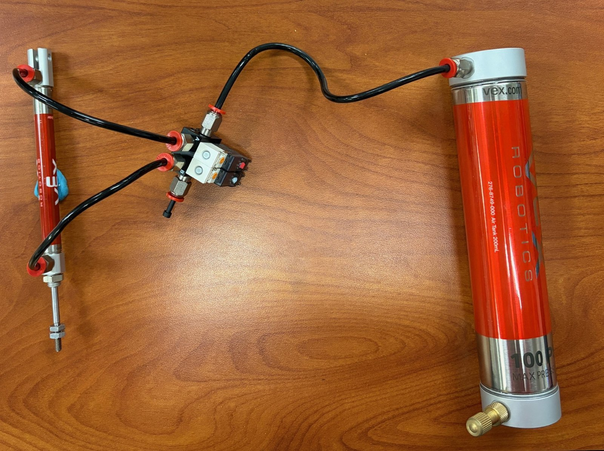
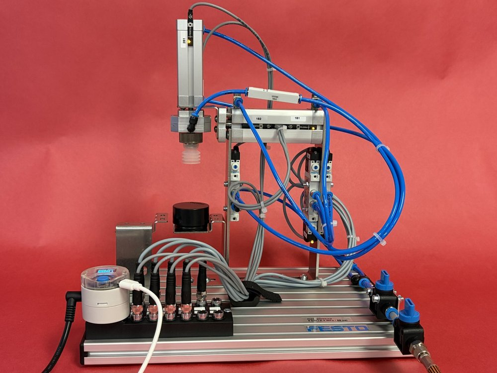

Every fluid power machine needs something that makes the pressure and something that turns it into movement. Today we follow that chain from start to finish.
A cylinder uses the same 100 psi of air to push its rod out and to pull its rod back in. Which way does it push harder?
A cylinder cannot make pressure by itself. A motor or engine first turns a machine that pushes fluid into the system. The path from that machine to the moving part is the power chain.
Air squeezes, so a receiver tank can store it under pressure. The compressor fills the tank ahead of time, and the system can draw a burst of air faster than the compressor could make it.
Oil barely squeezes, so most systems do not store it under pressure. The pump makes flow while the machine works, and a relief valve sends oil back to the reservoir if the pressure climbs too high.
That is why a shop compressor kicks on only now and then, while the pump on an excavator runs the whole time the engine is on.

Fill valve Tank Solenoid valve Cylinder1. In a hydraulic system, where does the oil go after it leaves the cylinder?
2. In a pneumatic system, which part stores compressed air so the compressor does not have to run every time a cylinder moves?
A cylinder turns pressure into straight-line motion. Air pushes on the piston, and the rod carries that push out to the machine.
The bore sets how much area the air pushes on, so it sets the force. The stroke sets how far the rod can travel.
A single-acting cylinder uses air to push one way only. A spring pushes it back when the air is let out.
A double-acting cylinder has a port at each end, so air pushes it both ways. The VEX cylinder is double-acting.
A double-acting cylinder has a port at each end. Air flows into the port at the rod end, and the port at the cap end is open to exhaust. What does the rod do?
When the cylinder pulls back, the air pushes only on the ring around the rod. The rod covers the middle of the piston, so there is less area to push on.
So the answer to the opening prediction is that it pushes harder than it pulls, even at the same pressure.
More pressure makes a cylinder push harder, but it does not decide how fast the rod moves. Speed depends on how fast fluid flows into the cylinder to fill the space behind the piston.
A bigger piston pushes harder but moves slower on the same flow. Engineers intentionally slow down pistons with flow control fittings, because a rod that moves too fast can slam into the end of its stroke, damage the machine or throw its load.
1. A clamp cylinder must squeeze a part harder, but the air pressure cannot go any higher. Which change gives more clamping force?
2. An ejector must push a box off a conveyor and then pull back out of the way, and both moves need force. Which type fits best?

The vacuum cup waits above the workpiece.
This pick-and-place machine moves a part with a vacuum cup instead of fingers. Watch when the vacuum turns on and off.
The air around us presses on everything at about 14.7 psi. A vacuum pump pulls air out of a suction cup, and the outside air pushes the cup and box together. Suction never pulls; the air pushes.
The pressure difference can never be more than 14.7 psi, and a leak lets air back in and shrinks it.
Suction grippers pick up and place boxes and bags, and vacuum sealing pulls air out of food packages so the food lasts longer.
A vacuum cleaner lowers the pressure inside, and the outside air rushes in, carrying dust and dirt with it.
Vacuum holds thin silicon wafers flat without scratching them, and chips are made in vacuum chambers to keep out air and dust.
Vacuum chambers test parts in space-like conditions, and particle accelerators need a vacuum so particles do not hit air molecules.
A suction gripper on a packaging line picks up plastic trays every time, but it drops cardboard boxes partway through the move. Its vacuum gauge shows a strong vacuum while it holds a tray and a weak vacuum while it holds a box.
Pick one industry: aerospace, manufacturing, construction, medical, entertainment or transportation. Find one machine in it that uses fluid power.
1. List a pneumatic power chain in order from the motor to the cylinder, then a hydraulic one. What happens to the air, and to the oil, after they leave the cylinder?
2. Choose one industrial use of vacuum. Explain how the pressure difference does the work, and name one limitation.
3. A double-acting cylinder runs at the same pressure both ways. Which statement about its force is true?